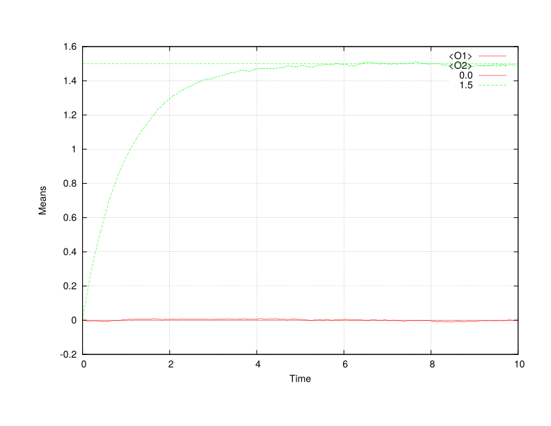
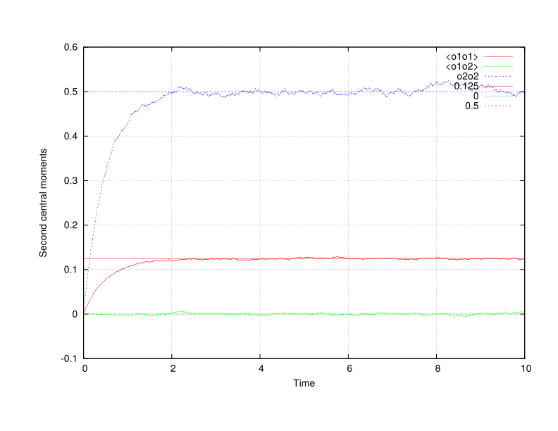
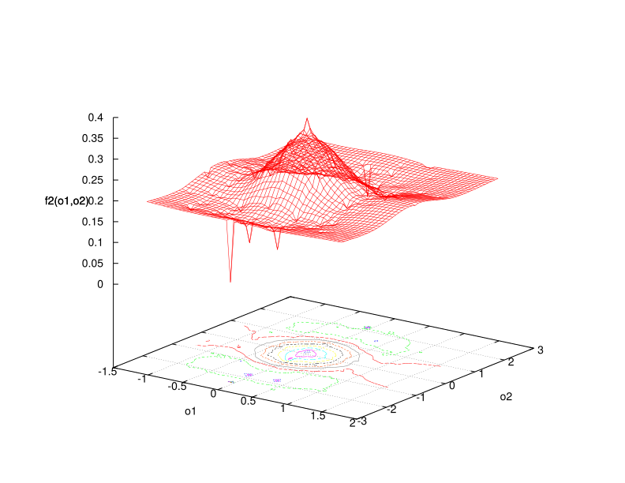

Walker: Integrating the diagonal Ornstein-Uhlenbeck SDE
This example runs Walker to integrate the diagonal Ornstein-Uhlenbeck SDE (see DiffEq/DiagOrnsteinUhlenbeck.h) using constant coefficients.
Control file
title "Example problem" walker term 10.0 # Max time dt 0.001 # Time step size npar 10000 # Number of particles ttyi 1000 # TTY output interval rngs mkl_mrg32k3a seed 0 end end diag_ou depvar o init raw coeff const ncomp 2 sigmasq 0.25 1.0 end theta 1.0 1.0 end mu 0.0 1.5 end rng mkl_mrg32k3a end statistics interval 2 <o1o1> <o2o2> <o1o2> end pdfs interval 500 filetype txt policy overwrite centering elem format scientific precision 4 f2( o1 o2 : 5.0e-2 5.0e-2 ) #; -2 2 -2 2 ) end end
Example run on 4 CPUs
./charmrun +p4 Main/walker -v -c ../../tmp/test.q -u 0.9Output
Running on 4 processors: Main/walker -v -c ../../tmp/diagou.q -u 0.9
charmrun> /usr/bin/setarch x86_64 -R mpirun -np 4 Main/walker -v -c ../../tmp/diagou.q -u 0.9
Charm++> Running on MPI version: 3.0
Charm++> level of thread support used: MPI_THREAD_SINGLE (desired: MPI_THREAD_SINGLE)
Charm++> Running in non-SMP mode: numPes 4
Converse/Charm++ Commit ID: b8b2735
CharmLB> Load balancer assumes all CPUs are same.
Charm++> Running on 1 unique compute nodes (4-way SMP).
Charm++> cpu topology info is gathered in 0.000 seconds.
,::,` `.
.;;;'';;;: ;;#
;;;@+ +;;; ;;;;;, ;;;;. ;;;;;, ;;;; ;;;; `;;;;;;: ;;;
:;;@` :;;' .;;;@, ,;@, ,;;;@: .;;;' .;+;. ;;;@#:';;; ;;;;'
;;;# ;;;: ;;;' ;: ;;;' ;;;;; ;# ;;;@ ;;; ;+;;'
.;;+ ;;;# ;;;' ;: ;;;' ;#;;;` ;# ;;@ `;;+ .;#;;;.
;;;# :;;' ;;;' ;: ;;;' ;# ;;; ;# ;;;@ ;;; ;# ;;;+
;;;# .;;; ;;;' ;: ;;;' ;# ,;;; ;# ;;;# ;;;: ;@ ;;;
;;;# .;;' ;;;' ;: ;;;' ;# ;;;; ;# ;;;' ;;;+ ;', ;;;@
;;;+ ,;;+ ;;;' ;: ;;;' ;# ;;;' ;# ;;;' ;;;' ;':::;;;;
`;;; ;;;@ ;;;' ;: ;;;' ;# ;;;';# ;;;@ ;;;:,;+++++;;;'
;;;; ;;;@ ;;;# .;. ;;;' ;# ;;;;# `;;+ ;;# ;# ;;;'
.;;; :;;@ ,;;+ ;+ ;;;' ;# ;;;# ;;; ;;;@ ;@ ;;;.
';;; ;;;@, ;;;;``.;;@ ;;;' ;+ .;;# ;;; :;;@ ;;; ;;;+
:;;;;;;;+@` ';;;;;'@ ;;;;;, ;;;; ;;+ +;;;;;;#@ ;;;;. .;;;;;;
.;;#@' `#@@@: ;::::; ;:::: ;@ '@@@+ ;:::; ;::::::
:;;;;;;. __ __ .__ __
.;@+@';;;;;;' / \ / \_____ | | | | __ ___________
` '#''@` \ \/\/ /\__ \ | | | |/ // __ \_ __ \
\ / / __ \| |_| <\ ___/| | \/
\__/\ / (____ /____/__|_ \\___ >__|
\/ \/ \/ \/
< ENVIRONMENT >
------ o ------
* Build environment:
--------------------
Hostname : sprout
Executable : walker
Version : 0.1
Release : LA-CC-XX-XXX
Revision : e26d8f8514a11ade687ba460f42dfae5af53d4d6
CMake build type : DEBUG
Asserts : on (turn off: CMAKE_BUILD_TYPE=RELEASE)
Exception trace : on (turn off: CMAKE_BUILD_TYPE=RELEASE)
MPI C++ wrapper : /opt/openmpi/1.8/clang/system/bin/mpicxx
Underlying C++ compiler : /usr/bin/clang++-3.5
Build date : Fri Feb 6 06:39:01 MST 2015
* Run-time environment:
-----------------------
Date, time : Sat Feb 7 11:34:29 2015
Work directory : /home/jbakosi/code/quinoa/build/clang
Executable (rel. to work dir) : Main/walker
Command line arguments : '-v -c ../../tmp/diagou.q -u 0.9'
Output : verbose (quiet: omit -v)
Control file : ../../tmp/diagou.q
Parsed control file : success
< FACTORY >
---- o ----
* Particle properties data layout policy (CMake: LAYOUT):
---------------------------------------------------------
particle-major
* Registered differential equations:
------------------------------------
Unique equation types : 8
With all policy combinations : 18
Legend: equation name : supported policies
Policy codes:
* i: initialization policy: R-raw, Z-zero
* c: coefficients policy: C-const, J-jrrj
Beta : i:RZ, c:CJ
Diagonal Ornstein-Uhlenbeck : i:RZ, c:C
Dirichlet : i:RZ, c:C
Gamma : i:RZ, c:C
Generalized Dirichlet : i:RZ, c:C
Ornstein-Uhlenbeck : i:RZ, c:C
Skew-Normal : i:RZ, c:C
Wright-Fisher : i:RZ, c:C
< PROBLEM >
---- o ----
* Title: Example problem
------------------------
* Differential equations integrated (1):
----------------------------------------
< Diagonal Ornstein-Uhlenbeck >
kind : stochastic
dependent variable : o
initialization policy : R
coefficients policy : C
start offset in particle array : 0
number of components : 2
random number generator : MKL MRG32K3A
coeff sigmasq [2] : { 0.25 1 }
coeff theta [2] : { 1 1 }
coeff mu [2] : { 0 1.5 }
* Output filenames:
-------------------
Statistics : stat.txt
PDF : pdf
* Discretization parameters:
----------------------------
Number of time steps : 18446744073709551615
Terminate time : 10
Initial time step size : 0.001
* Output intervals:
-------------------
TTY : 1000
Statistics : 2
PDF : 500
* Statistical moments and distributions:
----------------------------------------
Estimated statistical moments : <O1> <O2> <o1o1> <o1o2> <o2o2>
PDFs : f2(o1,o2:0.05,0.05)
PDF output file type : txt
PDF output file policy : overwrite
PDF output file centering : elem
Text floating-point format : scientific
Text precision in digits : 4
* Load distribution:
--------------------
Virtualization [0.0...1.0] : 0.9
Load (number of particles) : 10000
Number of processing elements : 4
Number of work units : 40 (39*250+250)
* Time integration: Differential equations testbed
--------------------------------------------------
Legend: it - iteration count
t - time
dt - time step size
ETE - estimated time elapsed (h:m:s)
ETA - estimated time for accomplishment (h:m:s)
out - output-saved flags (S: statistics, P: PDFs)
it t dt ETE ETA out
---------------------------------------------------------------
1000 1.000000e+00 1.000000e-03 000:00:02 000:00:18 SP
2000 2.000000e+00 1.000000e-03 000:00:04 000:00:16 SP
3000 3.000000e+00 1.000000e-03 000:00:06 000:00:14 SP
4000 4.000000e+00 1.000000e-03 000:00:08 000:00:12 SP
5000 5.000000e+00 1.000000e-03 000:00:10 000:00:10 SP
6000 6.000000e+00 1.000000e-03 000:00:12 000:00:08 SP
7000 7.000000e+00 1.000000e-03 000:00:14 000:00:06 SP
8000 8.000000e+00 1.000000e-03 000:00:16 000:00:04 SP
9000 9.000000e+00 1.000000e-03 000:00:18 000:00:02 SP
10000 1.000000e+01 1.000000e-03 000:00:20 000:00:00 SP
Normal finish, maximum time reached: 10.000000
* Timers (h:m:s):
-----------------
Initial conditions : 0:0:0
Migration of global-scope data : 0:0:0
Total runtime : 0:0:20
[Partition 0][Node 0] End of program
Estimated moments
Left – time evolution of the means and the means of the invariant distribution, right – time evolution of the variances and those of the invariant as well as the zero correlation between the two independent equations integrated.


Gnuplot commands to reproduce the above plots:
plot "stat.txt" u 2:3 w l t "<O1>", "stat.txt" u 2:4 w l t "<O2>", 0.0 lt 1, 1.5 lt 2 plot "stat.txt" u 2:5 w l t "<o1o1>", "stat.txt" u 2:6 w l t "<o1o2>", "stat.txt" u 2:7 w l t "<o2o2>", 0.25/2 lt 1, 0.0 lt 2, 0.5 lt 3
Estimated bivariate PDF
Example ASCII bivariate PDF output.
# vim: filetype=sh: # # Joint bivariate PDF: f2(o1,o2) # ----------------------------------------------- # Numeric precision: 4 # Bin sizes: 5.0000e-02, 5.0000e-02 # Number of bins estimated: 57 x 107 # Number of bins output: 57 x 107 # Sample space extents: [-1.2500e+00 : 1.5500e+00], [-2.4500e+00 : 2.8500e+00] # # Example step-by-step visualization with gnuplot # ----------------------------------------------- # gnuplot> set grid # gnuplot> unset key # gnuplot> set xlabel "o1" # gnuplot> set ylabel "o2" # gnuplot> set zlabel "f2(o1,o2)" # gnuplot> set dgrid3d 50,50,1 # gnuplot> set cntrparam levels 20 # gnuplot> set contour # gnuplot> splot "pdf_f2.txt" with lines # # Gnuplot one-liner for quick copy-paste # -------------------------------------- # set grid; unset key; set xlabel "o1"; set ylabel "o2"; set zlabel "f2(o1,o2)"; set dgrid3d 50,50,1; set cntrparam levels 20; set contour; splot "pdf_f2.txt" w l # # Data columns: o1, o2, f2(o1,o2) # ----------------------------------------------- 5.5000e-01 -1.6500e+00 4.0000e-02 1.0000e+00 -1.8000e+00 4.0000e-02 -9.5000e-01 1.7500e+00 4.0000e-02 -5.0000e-02 -2.4500e+00 4.0000e-02 8.0000e-01 2.3500e+00 4.0000e-02 -4.0000e-01 2.0500e+00 4.0000e-02 ...
Example visualization of the estimated bivariate PDF with contour lines at the final time step using the command in the above input file.
